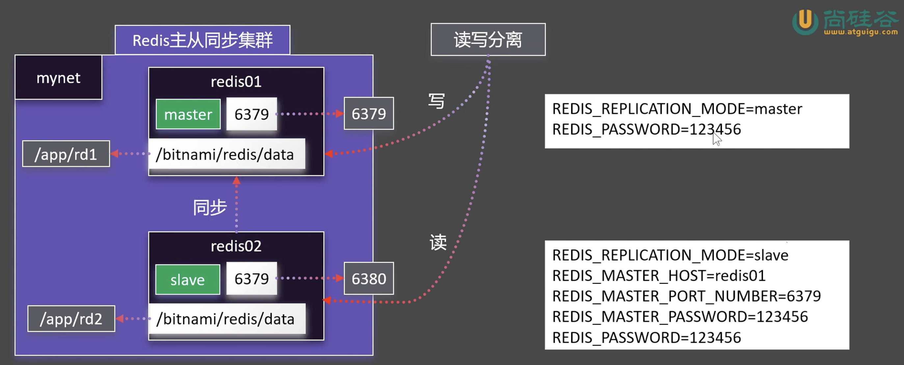

每一个容器都有自己的ip，我们可以使用docker inspect app01 | grep -A 19 "Networks" 来查看对应的信息。
^^/Downloads >>> docker inspect app01 | grep -A 19 "Networks"18:34:12
"Networks": {
"bridge": {
"IPAMConfig": null,
"Links": null,
"Aliases": null,
"DriverOpts": null,
"GwPriority": 0,
"NetworkID": "35c2ac70786853f14b3248aea2cfb1278ce59c805cdb82bd2c84803e6afc80d4",
"EndpointID": "d4b47ffd7a48841c1351ce4fdbd46fa8dada61677587a629d775da4d1de7a5ab",
"Gateway": "172.17.0.1",
"IPAddress": "172.17.0.2",
"MacAddress": "6a:b7:d2:c8:d4:6b",
"IPPrefixLen": 16,
"IPv6Gateway": "",
"GlobalIPv6Address": "",
"GlobalIPv6PrefixLen": 0,
"DNSNames": null
}
}
},
^^/Downloads >>> curl http://172.17.0.2:80 18:34:15
<h1>Hello World!</h1>
我们的每个容器的ip每次开启的时候可能会变化。所以我们也可以为容器指定一个域名。
要注意，我们需要新建一个网络，不能用默认的网络
创建docker网络的命令是：docker network
^^/Downloads >>> docker network --help 18:34:18
Usage: docker network COMMAND
Manage networks
Commands:
connect Connect a container to a network
create Create a network
disconnect Disconnect a container from a network
inspect Display detailed information on one or more networks
ls List networks
prune Remove all unused networks
rm Remove one or more networks
Run 'docker network COMMAND --help' for more information on a command.
创建我们的网络
^^/Downloads >>> docker network create mynet 19:34:26
272e849499d662dbff61ab86a1bc4585e01040b1d6526f9d5f068af529743739
^^/Downloads >>> docker network ls 20:59:12
NETWORK ID NAME DRIVER SCOPE
35c2ac707868 bridge bridge local
24c3de86af4a host host local
272e849499d6 mynet bridge local
f097d2b7c757 none null local
然后创建容器的时候指定网络
^^/Downloads >>> docker rm -f app01 20:59:29
app01
^^/Downloads >>> docker run -p 80:81 -d -v ngconf:/etc/nginx -v /media/psf/Home/workspace/data/dockerdemo/assets:/usr/share/nginx/html --network mynet --name app01 nginx
0430445d23ea84e8beef53b6dc980fc8c6124e000c94e681f975aee0c0d7a8f9
^^/Downloads >>> docker exec -it app01 bash 21:03:17
root@0430445d23ea:/# curl http://app01:80
<h1>Hello World!</h1>

docker run \
-d -p 6379:6379 \
-v /home/parallels/workspace/data/dockerdemo/rd1:/bitnami/redis/data \
-e REDIS_REPLICATION_MODE=master \
-e REDIS_PASSWORD=123456 \
--network mynet \
--name redis01 \
bitnami/redis
docker run \
-d -p 6380:6379 \
-v /home/parallels/workspace/data/dockerdemo/rd2:/bitnami/redis/data \
-e REDIS_REPLICATION_MODE=slave \
-e REDIS_MASTER_HOST=redis01 \
-e REDIS_MASTER_PORT_NUMBER=6379 \
-e REDIS_MASTER_PASSWORD=123456 \
-e REDIS_PASSWORD=123456 \
--network mynet \
--name redis02 \
bitnami/redis
注意设置一下权限，因为docker默认是root的，然后我们创建的文件夹不是，所以要
^^/w/d/dockerdemo >>> pwd
/home/parallels/workspace/data/dockerdemo
^^/w/d/dockerdemo >>> chmod 777 ./rd1
^^/w/d/dockerdemo >>> chmod 777 ./rd2
# 在主节点设置键值
docker exec redis01 redis-cli -a 123456 SET test:master "This is master data"
docker exec redis01 redis-cli -a 123456 INCR test:counter
docker exec redis01 redis-cli -a 123456 HSET test:hash field1 "value1" field2 "value2"
# 在从节点读取（验证同步）
docker exec redis02 redis-cli -a 123456 GET test:master
docker exec redis02 redis-cli -a 123456 GET test:counter
docker exec redis02 redis-cli -a 123456 HGETALL test:hash
得到输出结果
Warning: Using a password with '-a' or '-u' option on the command line interface may not be safe.
OK
Warning: Using a password with '-a' or '-u' option on the command line interface may not be safe.
1
2
Warning: Using a password with '-a' or '-u' option on the command line interface may not be safe.
Warning: Using a password with '-a' or '-u' option on the command line interface may not be safe.
This is master data
Warning: Using a password with '-a' or '-u' option on the command line interface may not be safe.
1
Warning: Using a password with '-a' or '-u' option on the command line interface may not be safe.
field1
value1
field2
value2